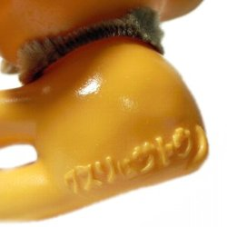
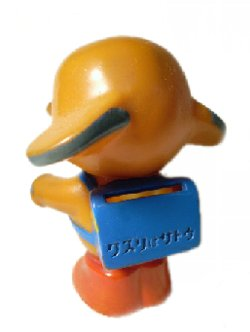
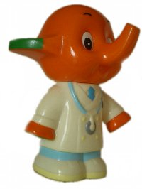
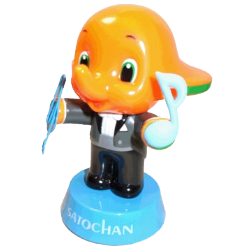
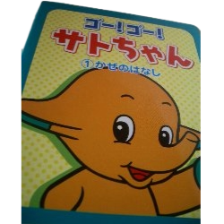
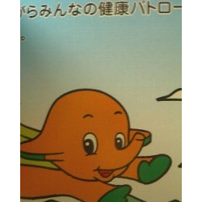
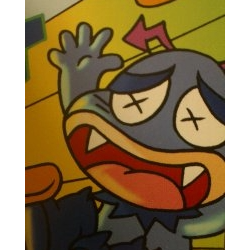
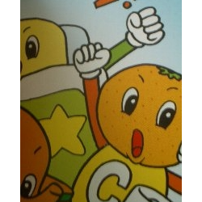
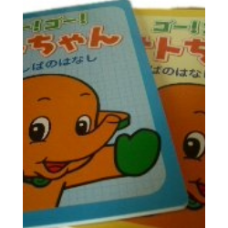
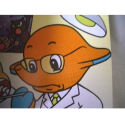

サトちゃん コレクション
Old but Gold. 薬局の店頭を彩ったマスコットたち。
サトちゃんSA-8型
置物


このサトちゃんは昭和36年以降、現在のサトちゃんになるまでに活躍していたものです。
オークションで購入しました。古い薬屋さんが廃業されたりすると、デッドストックとして古いおまけが出てくることがあるそうです。 これを譲っていただいたときもそんな感じでした。細長い箱の中にたくさん入っていました。
裏に「M・P」と彫られています。モダンプラスチック製。当時、こういったノベルティは、モダンプラスチック社が作ることが多かったようです。 モダンプラスチックって、響きが好きです。ひとつひとつ手塗りされていて、ちょっと適当なところもあるけれど（笑）よい味が出ています。 ちなみにこのサトちゃんの眉毛はマジックペンで描かれています。後の「クスリはサトウ」もよい味。（2001年入手。）
オークションで購入しました。古い薬屋さんが廃業されたりすると、デッドストックとして古いおまけが出てくることがあるそうです。 これを譲っていただいたときもそんな感じでした。細長い箱の中にたくさん入っていました。
裏に「M・P」と彫られています。モダンプラスチック製。当時、こういったノベルティは、モダンプラスチック社が作ることが多かったようです。 モダンプラスチックって、響きが好きです。ひとつひとつ手塗りされていて、ちょっと適当なところもあるけれど（笑）よい味が出ています。 ちなみにこのサトちゃんの眉毛はマジックペンで描かれています。後の「クスリはサトウ」もよい味。（2001年入手。）
入手：2001年
ランドセルサトちゃん
貯金箱


眉毛はSA-8型と同じくやっぱりマジックペンで描かれています。ひとつひとつが手塗りのようで、眉毛の太さはまちまちです。品番も合ったと思いますが、本来ランドセルサトちゃんが入っている袋に入っていない状態で入手したので、詳細は分かりません。
いろいろなランドセルサトちゃんを見比べて、このサトちゃんが気に入って購入しました。この眉毛は比較的細いものです。中にはスプレーのようなもので描かれていて、北斗の拳のケンシロウのようなサトちゃんもいます（笑）同じ人形なのに、眉毛ひとつでとても表情が変わってしまうのです
「クスリはサトウ」この貯金箱は500円が入りません。試したことはありませんが、いくら入るのかな･･･？あまり入らないような気もします。昔の硬貨ならたくさん入るのでしょうか。ランドセル、靴、目、鼻などすべて手塗りです。赤い靴の裏に小さく「MODERN PLASTICS JAPAN」とあります。かなり凝視しないとわからない状態ではあります。（2002年入手。）
いろいろなランドセルサトちゃんを見比べて、このサトちゃんが気に入って購入しました。この眉毛は比較的細いものです。中にはスプレーのようなもので描かれていて、北斗の拳のケンシロウのようなサトちゃんもいます（笑）同じ人形なのに、眉毛ひとつでとても表情が変わってしまうのです
「クスリはサトウ」この貯金箱は500円が入りません。試したことはありませんが、いくら入るのかな･･･？あまり入らないような気もします。昔の硬貨ならたくさん入るのでしょうか。ランドセル、靴、目、鼻などすべて手塗りです。赤い靴の裏に小さく「MODERN PLASTICS JAPAN」とあります。かなり凝視しないとわからない状態ではあります。（2002年入手。）
入手：2002年
ドクターサトちゃん
貯金箱


20世紀ファイナルカーニバルのもの。
今ではどうなっているのかわかりませんが、このドクターサトちゃん、サトコちゃんにはニセモノが存在しました。（￣ー￣；）
私は所有していないので画像で比較できないのが残念ですが、ニセモノは、すんごいブサイクでした。 あまりにも似てなくて、あれは手に入れておくべきだったのかも・・・と今では思います（笑）（2003年入手。）
今ではどうなっているのかわかりませんが、このドクターサトちゃん、サトコちゃんにはニセモノが存在しました。（￣ー￣；）
私は所有していないので画像で比較できないのが残念ですが、ニセモノは、すんごいブサイクでした。 あまりにも似てなくて、あれは手に入れておくべきだったのかも・・・と今では思います（笑）（2003年入手。）
入手：2002年
サトちゃんクリップ&メモホルダー
置物
ト音記号のマグネットとクリップつき。細かいところが凝ってます。
入手：？
ゴー！ゴー！サトちゃん かぜのはなし
本



サトちゃんが健康パトロールをしていると、風邪を引いちゃった男の子（まもるくん）を発見。ビタミンくんとストナで撃退、という内容の絵本です。
この絵本の最後にはサトちゃんの歌と楽譜が載っています。私は音符が全く読めないので、どんなメロディーか分かりませんでした。
しかし、街角にサトちゃんムーバーがあったので流して聴いて見ました。体重制限（10kg）で乗ることが出来ず残念でした。
この絵本の最後にはサトちゃんの歌と楽譜が載っています。私は音符が全く読めないので、どんなメロディーか分かりませんでした。
しかし、街角にサトちゃんムーバーがあったので流して聴いて見ました。体重制限（10kg）で乗ることが出来ず残念でした。
入手：？
ゴー！ゴー！サトちゃん むしばのはなし
本

ドクターS。歯医者さんです。大人のサトちゃんだ～（笑）。ぬりえも。 このイラストから、ドクターSは昔のサトちゃん、もしくはレトロサトちゃんのようですね。 （手と耳の色から推測しました。）
またまたサトちゃんが健康パトロールをしていると、 歯が痛くて困っているまもるくんを発見。 ドクターSに診てもらうと、「もうちょっとで虫歯になってたよ」と注意され、 アセスと一緒に虫歯菌を撃退、という内容です。
この絵本達、初めて存在を知ったとき、何が書いてあるのか 非常にわくわくしたのを覚えています。 ちょっと考えれば、どんな内容か推測できるのに。 フィギュアやストラップなどのグッズは一目でそれとわかるけれど、 実際手にするなり、中を見てみないとわからないこのような絵本は 手に入れるまでいろんな想像をさせてくれた楽しい存在です。
今ではサトちゃんのウェブページにも掲載されている、サトちゃんの歌 サトコちゃんの歌の存在をこの絵本で知り、単純にすごいなと感じました。 続編、出ないかな（笑） サトちゃん、いつもありがとう～。私が風邪を引いたら、 ぜひ我が家にも来てください（笑）
またまたサトちゃんが健康パトロールをしていると、 歯が痛くて困っているまもるくんを発見。 ドクターSに診てもらうと、「もうちょっとで虫歯になってたよ」と注意され、 アセスと一緒に虫歯菌を撃退、という内容です。
この絵本達、初めて存在を知ったとき、何が書いてあるのか 非常にわくわくしたのを覚えています。 ちょっと考えれば、どんな内容か推測できるのに。 フィギュアやストラップなどのグッズは一目でそれとわかるけれど、 実際手にするなり、中を見てみないとわからないこのような絵本は 手に入れるまでいろんな想像をさせてくれた楽しい存在です。
今ではサトちゃんのウェブページにも掲載されている、サトちゃんの歌 サトコちゃんの歌の存在をこの絵本で知り、単純にすごいなと感じました。 続編、出ないかな（笑） サトちゃん、いつもありがとう～。私が風邪を引いたら、 ぜひ我が家にも来てください（笑）
入手：？